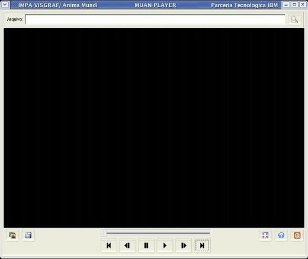
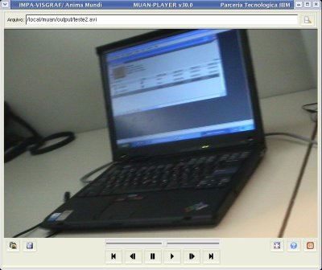
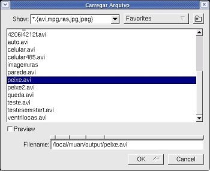
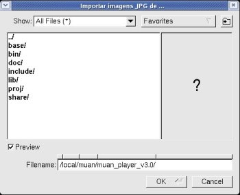
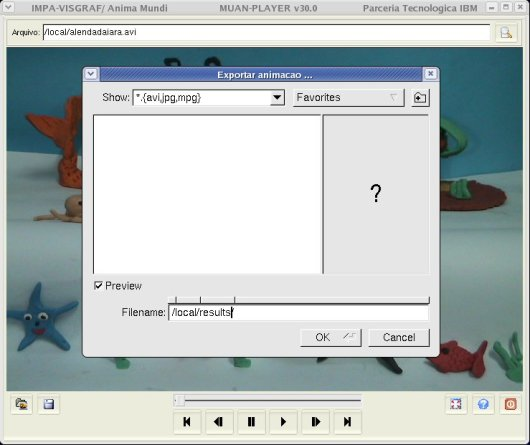

MUAN_PLAYER - Manual del Usuario
|
|
|
MUAN_PLAYER - Manual del Usuario |
El MUAN_PLAYER es una herramienta de apoyo al sistema MUAN, desenvolvido para permitir de manera simple, rápida y fácil la visualización de las animaciones generadas por el MUAN.
La imagen abajo muestra la pantalla principal del MUAN_PLAYER. Haga clic sobre un elemento para ver su función.

Modo de usar
>
muan_player [nombre del archivo]
En caso de ser adicionado el nombre de un archivo como parámetro después del comando, la aplicación será iniciada ya con la animación cargada.
|
Utilice la barra de direcciones para especificar el nombre del archivo (con la dirección completa) de la animación que desea tocar. Para cargarla presione ENTER.
Asi una vez que la animación es cargada, ella es posicionada en su primer cuadro. Para animarla o navegar por los cuadros, utilice los botones de navegación.
|
 |
Comandos Principales
Panel Central del MUAN donde es exhibida la animación.
Control indicador del cuadro actual. Indica la posición del cuadro actual dentro de la animación.
Exhibe el primer cuadro de la animación.
Tecla de Atajo: HOME
Retorna una posición hacia atrás del cuadro actual en la animación.
Tecla de Atajo: <
Detiene (para) la ejecución de la animación.
Tecla de Atajo: PAUSE
Ejecuta la animación.
Tecla de Atajo: CTRL+ENTER
Avanza del cuadro actual una posición hacia adelante.
Tecla de Atajo: >
Avanza del cuadro actual hacia el último cuadro de la animación.
Tecla de Atajo: END
Carga una animación previamente guardada. Formatos soportados: avi, mpg, ras y jpg.
Tecla de Atajo: CTRL+G

Indica el nombre del archivo de la animación que está siendo exhibida en el panel de imágenes. Puede ser usado tambien para cargar un archivo, basta digitar el nombre del archivo deseado y presionar ENTER.
Botón Importar lista de imágens JPG
Importa todas las imágenes JPG del directorio seleccionado en la tela que se abre, siguiendo el orden alfanumérico.
Tecla de Atajo: CTRL+I

Exporta la animación para alguno de los formatos disponibles: avi, mpg (mpg-1) o lista de imagenes jpg. El usuario deberá indicar el nombre del archivo a ser guardado con la extensión deseada. En el caso de la exportación para la lista de imágenes jpg, los archivos generados terán como prefijo el nombre informado seguido de un número secuencial.
Tecla de Atajo: CTRL+E

Acciona la aplicación en el modo Pantalla Entera, o sea, toda la pantalla del monitor es ocupada apenas con el panel de imágenes. Para retornar al modo normal de la pantalla, utilice la tecla ESC.
Tecla de Atajo: ALT+ENTER
Abre este manual en un buscador.
Sale de la aplicación.
Tecla de Atajo: ESC
| Coordinacion |
Desenvolvimiento |
Sociedad Tecnologica |